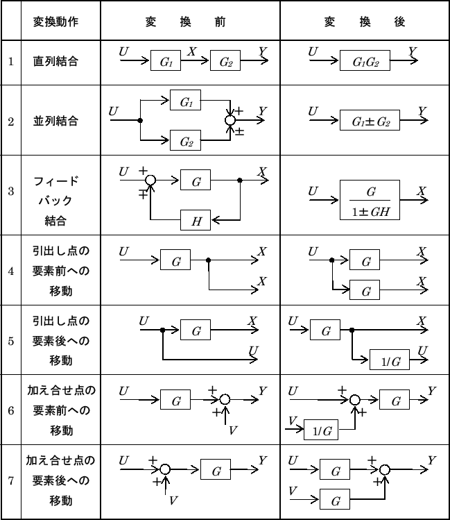

伝達関数２（Transfer Function）
伝達関数とブロック線図
ブロック線図のパターンと伝達関数の演算の対応表を示す。

（出典：http://ysserve.wakasato.jp/Lecture/ControlMecha1/node10.html）
むだ時間（dead time）を含む系
入力に対する応答に一定のラグ（むだ時間）を含む系は伝達関数表現と相性が悪い。
というのも、このケースでは伝達関数が指数関数となってしまうため。
例
は信号の伝達をだけ遅延させるシステム。
これをラプラス変換すると
となる。
パデー近似（Pade approximation）
むだ時間を無視できない場合、次のような有利関数への近似を行うことがある。